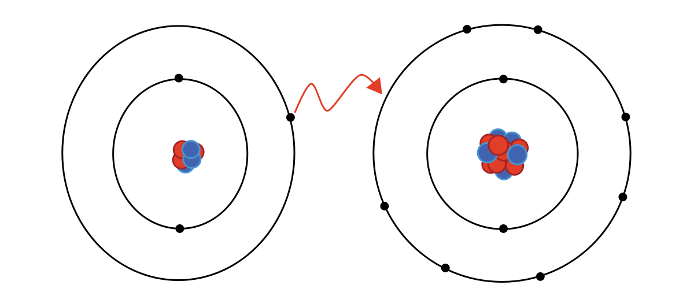
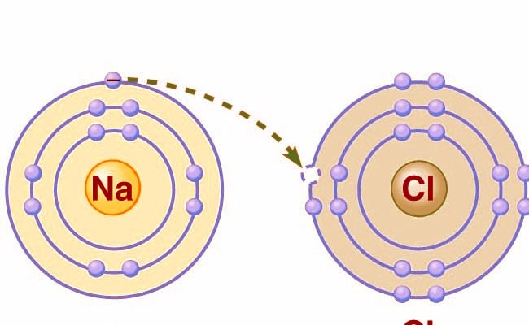
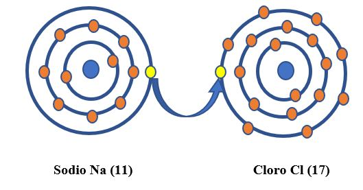
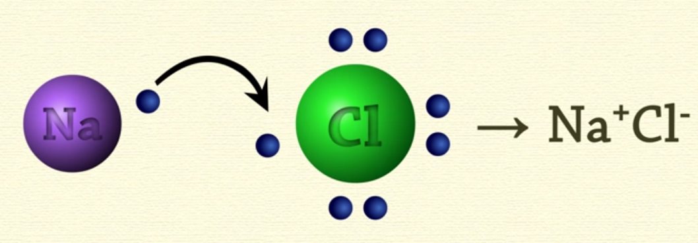

INFORMACION SOBRE EL TEMA
Bienvenido a la sección de información, aquí podrás hacer una retro alimentación del tema propuesto en el juego y además si deseas profundizar mas el tema, puedes aprender con la siguiente información:
¿QUE ES El ENLACE IONICO? 
Un enlace ionico es la unión de un elemento metálico y uno no metálico, donde se transfieren electrones, este sucede cuando en el enlace, uno de los átomos capta electrones del otro, la atracción electrostática entre los iones de carga opuesta causa que se unan y formen un compuesto químico, por otra parte también para que se de un enlace ionico la diferencia entre las electronegatividades tiene que ser mayor o igual a 1.7.
Propiedades del Enlace Ionico
Son Enlaces Fuertes: La estructura de estos compuestos suelen formar redes cristalinas muy resistentes.
 Poseen un alto punto de fusión y ebullición: Esto se da pues se requieren grandes cantidades de energía para romper la atracción electrostática entre los iones.
 Conducción Eléctrica: En su estado solido, no son buenos conductores de electricidad porque los iones ocupan posiciones muy fijas en la red cristalina, pero disueltos en agua, se tornan como muy buenos conductores de electricidad.
 Selectividad: Los enlaces ionicos solo se pueden dar entre metales de los grupos IA y IIA y los no metales de los grupos VIA y VIIA.

WebGrafia
Información Basada en: Concepto de Enlace Ionico